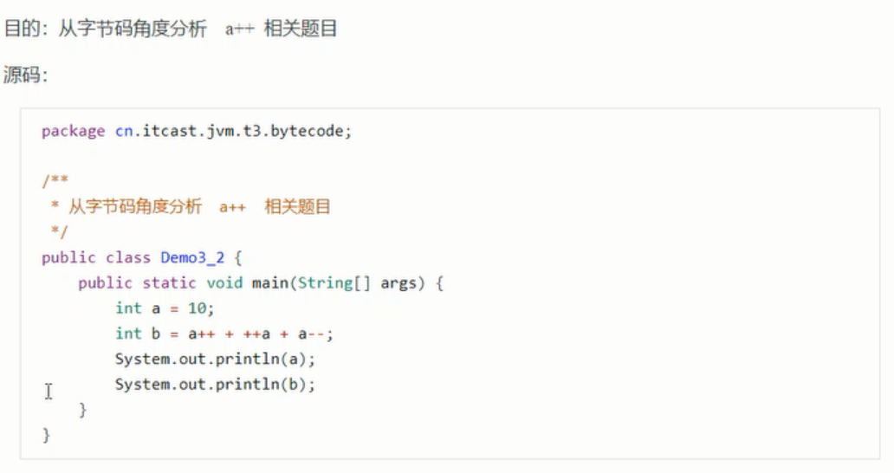

2、4 练习-分析i++

a++ 是先iload(入栈)再iinc
++a是先iinc再iload


2、5 条件判断指令


说明：
byte，shot，char都会按照int比较，因为操作数栈都是4字节
goto 用来进行跳转到指定行号的字节码
源码：


2、6 循环控制指令


2、7 练习—判断结果

2、8 构造方法
第一类：<cinit>()V


编译器会按照从上至下的顺序，收集所有的static静态代码块和静态成员赋值的代码，合并为一个特殊的方法
<cinit>()V
<cinit>()V方法会在类加载的初始化阶段被调用
第二类：<init>()V

编译器会按照从上至下的顺序，收集所有{}代码块和成员变量赋值的代码，形成新的构造方法，但原始构造方法内的代码总是在最后
新的构造方法的执行顺序;
a="s1";
b=20;
b=10;
a="s2";
this.a=a;
this.b=b;

2、9 方法调用

字节码：

invokespecial 调用构造方法
invokespecial 私有方法
invokespecial final方法
invokevirtual 普通public方法
invokestatic 静态方法
invokespecial 、invokestatic 属于静态绑定，性能更高
new关键字， 调用构造方法的时候，首先在堆空间分配了一个该对象需要的内存，new实际上是分了两步，第一步是给它分配内存，分配成功它会把该对象的引用放入操作数栈，dup指令是把栈顶的地址进行复制，invokespecial会将栈顶的对象引用 ，根据它去调用对应的构造方法，调用结束将该引用从栈顶清除，astore_1是将剩余的引用存入到局部变量表中的d变量。


调用静态方法时，先将对象入栈，紧接着就弹出，静态方法不需要对象去调用，调用invokestatic 调用静态方法。
2、10 多态的原理


演示多态原理，注意加上下面的JVM参数，禁用指针压缩：
-XX:-UseCompressedOops -XX:-UseCompressedClassPointers

查找类：p26
多态的方法存在于vtable中
vtable（虚方法表）
vtable是在 类加载 过程中的链接阶段就会生成，
vtable和class的偏移地址是1b8（十六进制）

2、11 异常处理